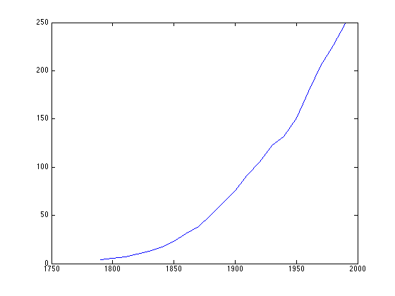
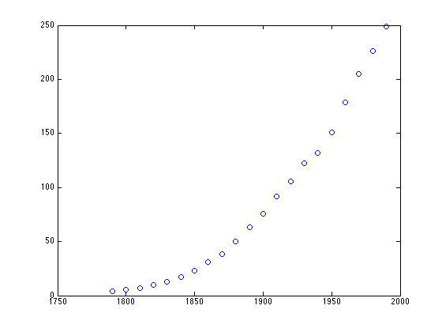
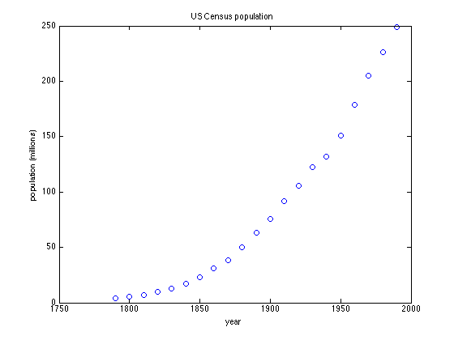
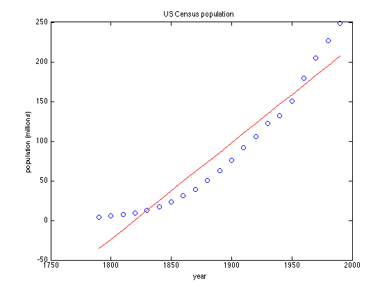
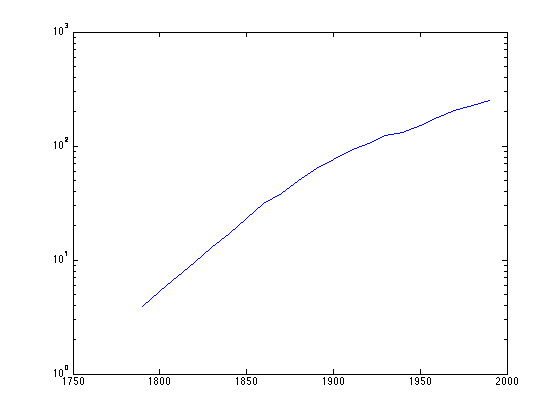
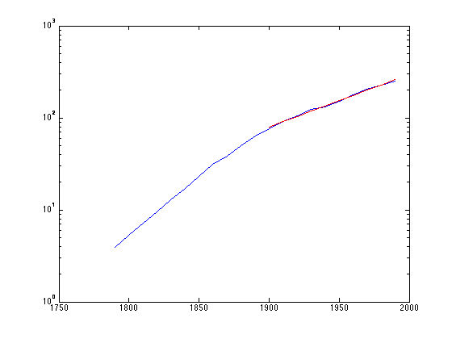

Contents
Playing with census data
Toby Driscoll, July 2014
clear, close all
Raw data
Here is some data from the US census. It comes with matlab by default.
load census
who
Your variables are: cdate pop
We inspect the values of variables just be entering their names at the command line.
cdate
cdate =
1790
1800
1810
1820
1830
1840
1850
1860
1870
1880
1890
1900
1910
1920
1930
1940
1950
1960
1970
1980
1990
pop
pop =
3.9000
5.3000
7.2000
9.6000
12.9000
17.1000
23.1000
31.4000
38.6000
50.2000
62.9000
76.0000
92.0000
105.7000
122.8000
131.7000
150.7000
179.0000
205.0000
226.5000
248.7000
Matlab considers these variables to be vectors. They have the same size.
size(cdate)
ans =
21 1
We can put them side by side using square brackets.
both = [ cdate, pop ]
both =
1.0e+03 *
1.7900 0.0039
1.8000 0.0053
1.8100 0.0072
1.8200 0.0096
1.8300 0.0129
1.8400 0.0171
1.8500 0.0231
1.8600 0.0314
1.8700 0.0386
1.8800 0.0502
1.8900 0.0629
1.9000 0.0760
1.9100 0.0920
1.9200 0.1057
1.9300 0.1228
1.9400 0.1317
1.9500 0.1507
1.9600 0.1790
1.9700 0.2050
1.9800 0.2265
1.9900 0.2487
Matlab calls this a matrix. Most languages would call it an array. It has two columns.
size(both)
ans =
21 2
One of the first things you usually want to do with data is to look at it graphically. The plot command uses a pair of vectors to define points in the plane, and connects them with straight lines.
plot(cdate,pop)
It's usually better to show the actual individual values, since the lines in between are fictitious.
plot(cdate,pop,'o')
 We can annotate the graph after it is made.
xlabel('year') ylabel('population (millions)') title('US Census population')
Simple analysis
We can calculate basic facts about the data.
average_value = mean(pop) standard_dev = std(pop) median_value = median(pop)
average_value = 85.7286 standard_dev = 78.6011 median_value = 62.9000
Those aren't very helpful. Let's try finding the best-fit line to the data.
p = polyfit(cdate,pop,1)
p =
1.0e+03 *
0.0012 -2.2120
These are the coefficients of a linear function--a polynomial of degree one. Matlab represents a polynomial as a vector of coefficients, from highest degree to constant term.
slope = p(1), intercept = p(2)
slope =
1.2157
intercept =
-2.2120e+03
We'll compare the best fit line to the data. In order to add to a plot, use hold on.
hold on
The polyval command evaluates a polynomial at given points.
plot(cdate,polyval(p,cdate),'r')
 Exponential analysis
The linear fit is not very good. We expect that populations grow exponentially. Such a relationship is revealed by a log-linear graph.
clf semilogy(cdate,pop)
There are two distinct eras of growth. Let's just fit the data since 1900.
mask = (cdate >= 1900); p = polyfit( cdate(mask), log(pop(mask)), 1 ); hold on plot( cdate(mask), exp(polyval(p,cdate(mask))), 'r' )
We can extrapolate to 2010.
pop2010 = exp( polyval(p,2010) )
pop2010 = 335.6168
The actual population was about 309 million.